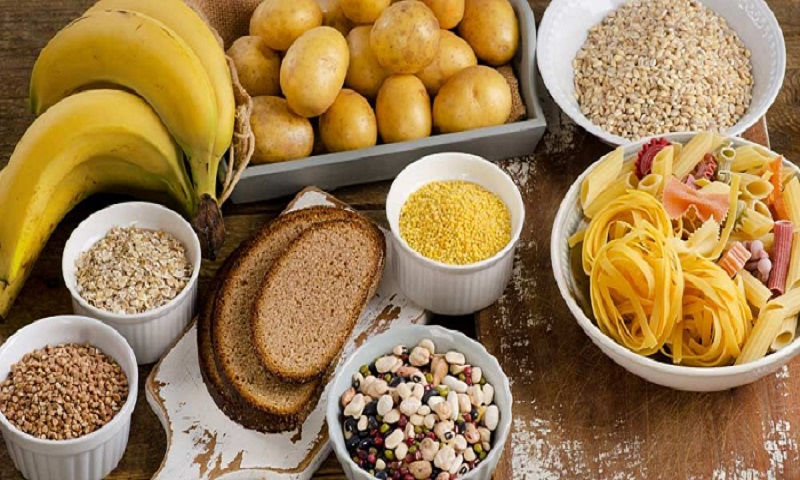

ΥΔΑΤΑΝΘΡΑΚΕΣ
Τι είναι οι Υδατάνθρακες
Οι Υδατάνθρακες είναι μια ομάδα από οραγνικές ενώσεις που συντίθενται
από άνθρακα, υδρογονο και οξυγόνο.
Τα φυτά συνθέτουν
Υδατάνθρακες και τους εναποθηκεύουν γιατί αυτοί αποτελούν την κύρια
πηγή ενέργειάς τους.
Ας δούμε κάποιους από τους Υδατάνθρακες που θεωρούνται γνωστοί:
-
Γλυκόζη
Αποτελεί το κύριο προιόν υδρόλυσης των σύνθετων υδατανθράκων κατά την πέψη τους. Οξυδώνεται στα κύττταρα για να δώσει ενέργεια και αποθηκεύεται ως γλυκογόνο στο ήπαρ και στους μύς.
Σε μεγάλες ποσότητες υπάρχει σε λίγες τροφές, όπως τα φρούτα πχ. σταφύλια -
Φρουκτόζη
Ελεύθερη βρίσκεται σε φρούτα όπως τα σύκα και στο μέλι. Είναι συστατικό της ζάχαρης και άλλων σύνθετων υδατανθράκων. -
Άμυλο
Βρσκεται στα δημητριακά και στα φρούτα, στις ρίζες των φυτών, στα λαχανικά και στα όσπρια. -
Σακχαρόζη
Η γνωστή ζάχαρη. Χημικά αποτελείται από 1 μόριο γλυκόζης και 1 μόριο φρουκτόζης. -
Κυτταρίνη
Η κυτταρίνη χημικά μοιάζει με Οι αγελάδες που έχουν το ένζυμο κυτταρινάση μπορούν να διασπούν τις φυτικές ίνες γι' αυτό και παχαίνουν.
Ενώ οι άνθρωποι επειδή δεν έχουν αυτό το ένζυμο δεν παχαίνουν.
Άρα αξίζει να σημειωθεί ως προς τις φυτικές ίνες:Μας βοηθούν στη αύξηση αίσθησης κορεσμού, διευκολύνουν τη λειτοργια του εντέρου
διατηρούν τη γλυκόζη (βοηθούν τους διαβητικούς) και αποβάλλουν τοξικές ουσίες.
